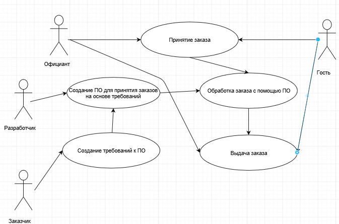

Автоматизация процесса принятия заказа
Осуществление заказа с участием ПО
Система управления заведением
| Участник | Категория | Цель |
|---|---|---|
| Разработчик | Основной | Разработка ПО для автоматизации принятия заказа и удовлетворение требований заказчика |
| Заказчик | Внешний | Предоставить требования к ПО |
| Официант | Вшнешний | Принятие заказов |
| Гость | Внешний | Получение заказа |
| Среда разрабоки системы | Инструмент | Предоставить инструменты разработки системы |
Сформированы требования заказчика
Подготовлен набор инструментов
Разработано ПО
Реализована возможность обращения к ПО
Заказчик удовлетворен
| Участник | Действие | Ожидаемый результат |
|---|---|---|
| Разработчик | Создает ПО | Готовое и протестированное ПО |
| Официант | Принятие заказа с помощью ПО | Заказ принят и храниться в ПО |
| Гость | Делает заказ | Заказ успешно исполнен |
Заказ не был обработан
Потворное принятие заказа